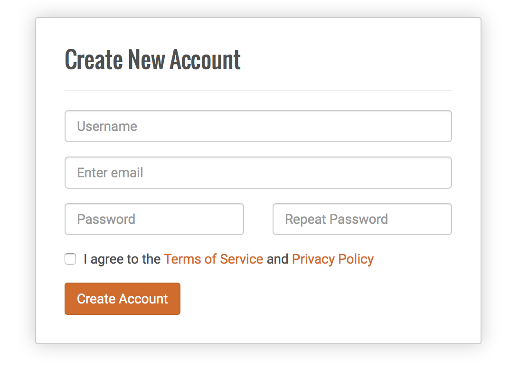
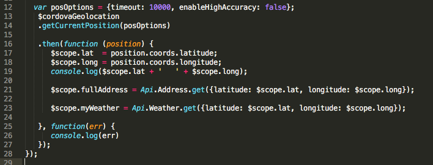
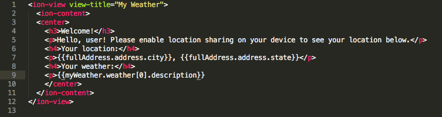
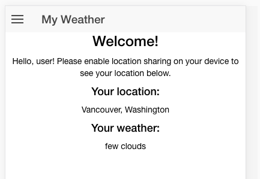

Open a new Chrome tab and visit OpenWeatherMap. The top nav bar will have a link to sign up - navigate there, and fill out the form to sign up for an account. The default type of account available is free, but you need to sign up in order to receive the API key necessary to interact with their API.

Once you've created an account, you will be prompted to answer a question about your proposed API use and then taken to the Setup tab of the user page. The second tab is titled API keys; click on the tab to see your pre-generated API key. Once there, copy the key. Back in your apis.js file, replace the XXX following APIID in the Weather resource with the API key from OpenWeatherMap.
Moving back to controllers.js, we can call the Weather API in the same way that we already modeled calling the Address API in the previous section. This can be placed after the call to assign the value of $scope.fullAddress.

OpenWeatherMap returns a JSON hash; inside that, the weather itself is an array with a single hash inside the array, so in order to access the weather description, we must refer to the 0 index on the weather array. Your updated myweather.html view should look as such:

Not surprisingly, the part of the Pacific Northwest I'm in is currently cloudy, so my view updates with the description of the current weather.

For our last step, it's time to open up our app in the Xcode emulator to see how it works on an iPhone 6s.